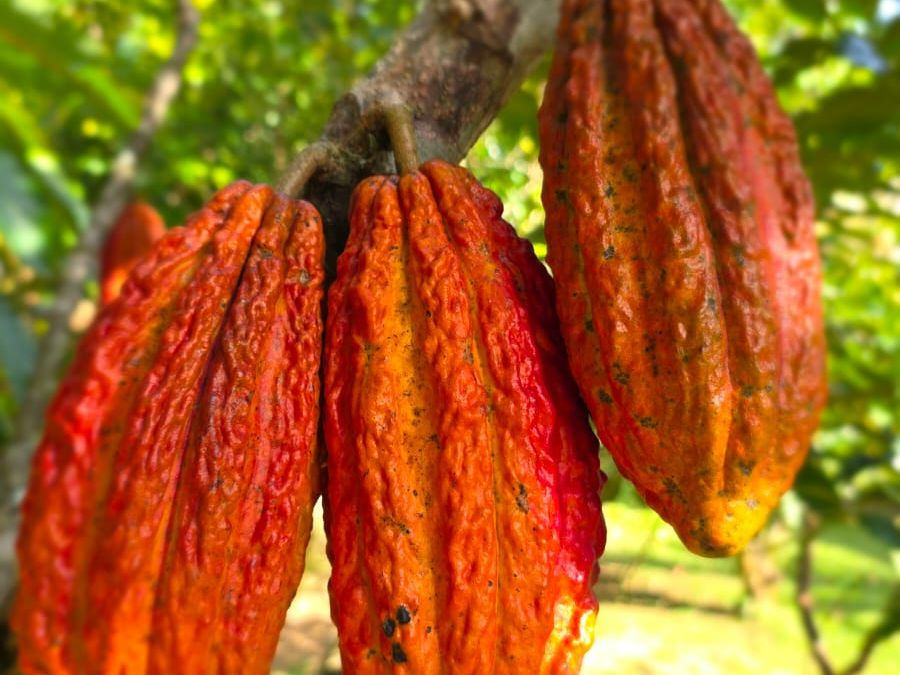

Encantos Nativos
Encantos NativosExperiencia de cacao
Del árbol a la taza: cosecha, fermentación, tostado y una cata del chocolate que sale de esta misma montaña.

El cacao es parte de lo que sigue siendo esta finca: hay árboles de cacao sembrados entre el bosque. La experiencia recorre el proceso completo, desde la mazorca recién cosechada hasta la taza de chocolate que se prepara al final.
Qué incluye
- Cosecha de la mazorca directamente del árbol
- Fermentado y tostado tradicional
- Cata del chocolate resultante
También te puede interesar
Encantos Nativos · Vereda La Honda, sector El Trocadero · San Rafael, Antioquia · RNT 240497